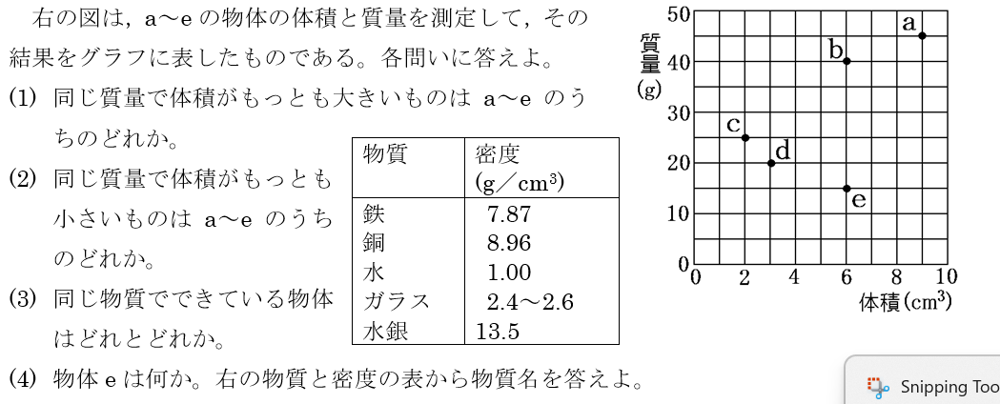
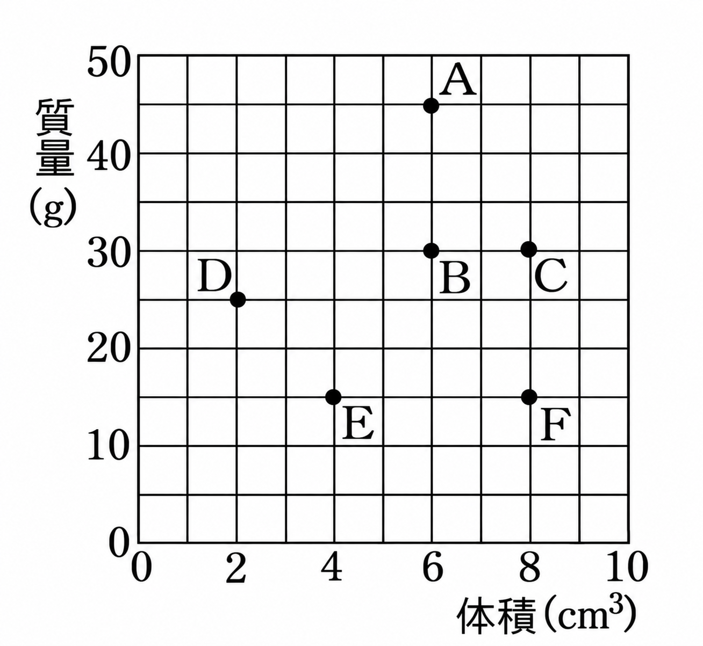

1有機物と無機物
📖 江原予備校テキストより
砂糖、食塩、小麦粉をそれぞれガスバーナーで加熱する実験をした。
✏️ 練習1:有機物と無機物の判別
問1集気ビンの中で加熱し、燃焼さじを取り出したあと石灰水を入れてふたを閉めよく振ると、石灰水が白くにごった。これは何が生じたからか。
正解はウ:二酸化炭素。石灰水は二酸化炭素に反応して白くにごります。
問2砂糖、食塩、小麦粉のうち、石灰水を白くにごらせる(燃やすと二酸化炭素が生じる)物質の組み合わせはどれか。
正解はイ。砂糖と小麦粉は炭素をふくむ有機物です。食塩は無機物なので変化しません。
問3砂糖やデンプンやロウのように炭素をふくみ、燃やすと二酸化炭素ができる物質を有機物、それ以外の物質を無機物という。
○ 正解です。この定義は基本なので、しっかり覚えておきましょう。
問4集気ビンの中で砂糖を燃やすと、びんの内側が白くくもった。この部分に塩化コバルト紙をつけたら青色から赤色にかわった。このことから、砂糖には何の成分がふくまれていたことがわかるか。
正解はア:水素。びんの内側にできた水は、砂糖にふくまれる水素と空気中の酸素が結びついてできたものです。
2金属と非金属
📖 江原予備校テキスト 練習より
金属の性質と、金属・非金属の分類について確認します。
✏️ 練習2:金属の性質
問1電気をよく通し、特有の光沢のある物質を何というか。
正解はエ:金属。電気伝導性・熱伝導性・金属光沢・展性・延性が金属に共通する性質です。
問2ゴムは電気をよく通すので金属である。
× ゴムは電気を通しにくく、金属光沢もないため非金属です。
問3次の物質{鉄 炭 ゴム 金 アルミニウム ガラス}のうち、非金属をすべて選んだ組み合わせはどれか。
正解はイ。炭、ゴム、ガラスは金属の性質をもたないため非金属です。
3ガスバーナーの使い方
📖 江原予備校テキスト 練習より
ガスバーナーの点火・消火の手順を確認します。
✏️ 練習3:ガスバーナーの操作
問1ガスバーナーの上側のねじと下側のねじの名前の組み合わせとして正しいものはどれか。
正解はア。上側が空気調節ねじ、下側がガス調節ねじです。
問2ガスバーナーを消火するときは、点火のときと同じ順番でねじを操作する。
× 消火は点火とちょうど逆の順番で行います(空気調節ねじ→ガス調節ねじ→元栓の順)。逆にすると、冷えたときに調節ねじが回らなくなることがあります。
問3マッチに火をつけてガスバーナーに点火するとき、どのように近づけるのがよいか。
正解はウ。斜め下からガスの出口に近づけて点火します。
問4図のように、ガスバーナーの上側のねじAと下側のねじBがある。Aのねじの名前として正しいものはどれか。
正解はイ。上側のねじAは空気調節ねじです。下側のねじBがガス調節ねじです。
問5問4のねじAを、図の矢印aの向き(時計回り)に回すとどうなるか。
正解はア。ねじAをaの向きに回すとしまります。
問6下側のねじBの名前として正しいものはどれか。
正解はイ。下側のねじBはガス調節ねじです。
問7問6のねじBを、図の矢印bの向き(反時計回り)に回すとどうなるか。
正解はイ。ねじBをbの向きに回すとゆるみ、ガスの量が増えます。
4メスシリンダーの使い方
📖 江原予備校テキスト 練習より
メスシリンダーの正しい使い方・目盛りの読み方を確認します。
✏️ 練習4:メスシリンダーの読み方
問1メスシリンダーは、使うときどのような場所に置かなければならないか。
正解はイ。机などの水平な場所に置いて使用します。
問2メスシリンダーの目盛りは、目分量で1目盛りの10分の1まで読みとる。
○ 正解です。液面がちょうど目盛りの位置にある場合も「.0」をつけて記録します。
問3水が40.0cm³入ったメスシリンダーにネジを入れたら、目盛りは45.0cm³になった。このネジの質量を測ったら39.0gだった。このネジの密度は何g/cm³か。
正解はエ。ネジの体積は45.0－40.0＝5.0cm³。密度＝39.0÷5.0＝7.8g/cm³です。
5密度の計算 ― 入試問題精選
📖 江原予備校テキスト 練習より(入試過去問)
密度の公式を使いこなせるか、実戦的な問題で確認します。

✏️ 練習5:密度の入試問題
問1100mLのメスシリンダーに30.0mLの水を入れ、16.2gの金属を入れると目盛りは36.0cm³になった(1mL=1cm³)。この金属の密度は何g/cm³か。〈鹿児島県〉
正解はア。金属の体積は36.0－30.0＝6.0cm³。密度＝16.2÷6.0＝2.7g/cm³です。
問23種類の金属a〜cの質量と体積を測定した(a:47.2g/6.0cm³、b:53.8g/6.0cm³、c:53.8g/20.0cm³)。密度が最も大きいものはどれか。〈群馬県〉
正解はイ。a≒7.87、b≒8.97、c＝2.69(g/cm³)なので、最も大きいのはbです。
問34℃の水100cm³(密度1.00g/cm³)をすべて0℃の氷(密度0.92g/cm³)にすると、できた氷の体積は何cm³か。小数第1位まで求めよ。〈三重県〉
正解はウ。質量は変わらず100gのまま。氷の体積＝100÷0.92＝108.69…≒108.7cm³です。
問4質量53.7gの金属を、水30cm³が入った100cm³メスシリンダーに入れたら目盛りが40.0cm³になった。表(鉄7.87、アルミニウム2.70、金19.3、銅8.96)より、この金属は何と考えられるか。〈神奈川県〉
正解はイ。体積＝40.0－30.0＝6.0cm³。密度＝53.7÷6.0＝8.95g/cm³。表の中で最も近いのは銅(8.96)です。
問5密度(g/cm³)＝物質の(①)(g)÷物質の(②)(cm³)という式がある。①にあてはまる言葉はどれか。
正解はア。密度(g/cm³)＝質量(g)÷体積(cm³)です。
問6問5の式で、②にあてはまる言葉はどれか。
正解はイ。②には体積が入ります。
問7体積3.0cm³、質量4.8gの物体をつくる物質の密度は何g/cm³か。
正解はイ。密度＝4.8÷3.0＝1.6g/cm³です。
6グラフ・表を読み取る密度の問題(発展)
📖 江原予備校テキスト 練習より
グラフの傾きから密度を読み取る発展問題です。「原点を通る直線の傾きが大きいほど密度が大きい」「同じ直線上にある点は同じ物質」を使って解きましょう。
✏️ 練習6:グラフと表から密度を求める
【問題A】物体a〜eの体積と質量を測定し、グラフに表した。

物体a〜eの体積(cm³)と質量(g)の関係
| 物質名 | 密度(g/cm³) | 物質名 | 密度(g/cm³) |
|---|---|---|---|
| 鉄 | 7.87 | ガラス | 2.4〜2.6 |
| 銅 | 8.96 | 水銀 | 13.5 |
| 水 | 1.00 | ― | ― |
問1同じ質量で比べたとき、体積が最も大きいもの(＝密度が最も小さいもの)はどれか。
正解はエ。各点と原点を結んだ直線の傾きが小さいほど密度は小さくなります。eは傾きが最も小さく、密度が最も小さいので、同じ質量なら体積は最も大きくなります。
問2同じ質量で比べたとき、体積が最も小さいもの(＝密度が最も大きいもの)はどれか。
正解はウ。原点と結んだ直線の傾きが最も大きいcが密度が最も大きく、体積は最も小さくなります。
問3a〜eのうち、同じ物質でできている(＝密度が等しい)組み合わせはどれか。
正解はイ。bとdは原点を通る同じ直線上にあるので密度が等しく、同じ物質でできていると考えられます。
問4物体eは質量15.0g、体積6.0cm³である。表と照らし合わせると、eは何であると考えられるか。
正解はエ。密度＝15.0÷6.0＝2.5g/cm³。これはガラスの密度(2.4〜2.6)とほぼ等しいので、eはガラスであると考えられます。
【問題B】物体A〜Fの体積と質量を測定し、グラフに表した。

物体A〜Fの体積(cm³)と質量(g)の関係
問5Bの密度は何g/cm³か。
正解はイ。Bは体積6.0cm³、質量30gなので、密度＝30÷6.0＝5.0g/cm³です。
問6A〜Fのうち、密度が最も大きいものはどれか。
正解はウ。Dは原点と結んだ直線の傾きが最も大きく(25÷2.0＝12.5g/cm³)、密度が最も大きい物体です。
問7A〜Fのうち、密度が最も小さいものはどれか。
正解はエ。Fは原点と結んだ直線の傾きが最も小さく(15÷8.0≒1.9g/cm³)、密度が最も小さい物体です。
問8A〜Fのうち、同じ物質でできている(＝密度が等しい)組み合わせはどれか。
正解はイ。C(8.0cm³,30g)とE(4.0cm³,15g)は密度がどちらも3.75g/cm³で等しく、原点を通る同じ直線上にあります。
問9問8で、CとEが同じ物質でできていると判断できる理由として最も適切なものはどれか。
正解はウ。原点を通る同じ直線上にある点は密度が等しく、密度が等しければ同じ物質と判断できます。
【問題C】4種類の金属のかたまりがあり、3種類は銅・アルミニウム・鉄であることがわかっている。
| 銅 | アルミニウム | 鉄 | 謎の金属 | |
|---|---|---|---|---|
| 質量(g) | 63.0 | 16.2 | 86.9 | 63.2 |
| 体積(cm³) | 7.0 | 6.0 | 11.0 | 8.0 |
問10銅の密度は何g/cm³か。
正解はイ。密度＝63.0÷7.0＝9.0g/cm³です。
問11鉄の密度は何g/cm³か。小数第2位を四捨五入して答えよ。
正解はウ。密度＝86.9÷11.0＝7.90…≒7.9g/cm³です。
問12謎の金属の密度は63.2÷8.0で求められる。表の3種類のうち、謎の金属はどれと考えられるか。
正解はウ。謎の金属の密度＝63.2÷8.0＝7.9g/cm³。これは鉄の密度(7.9g/cm³)と一致するので、謎の金属は鉄であると考えられます。